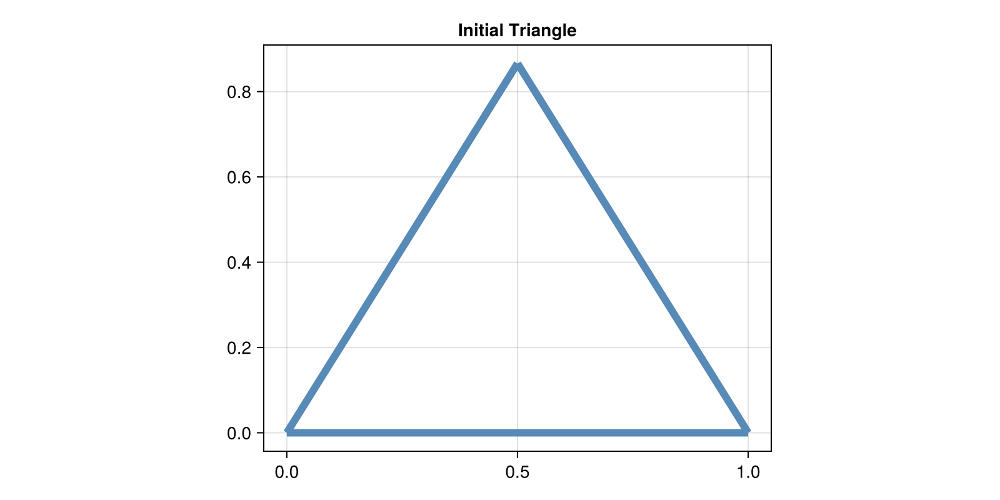
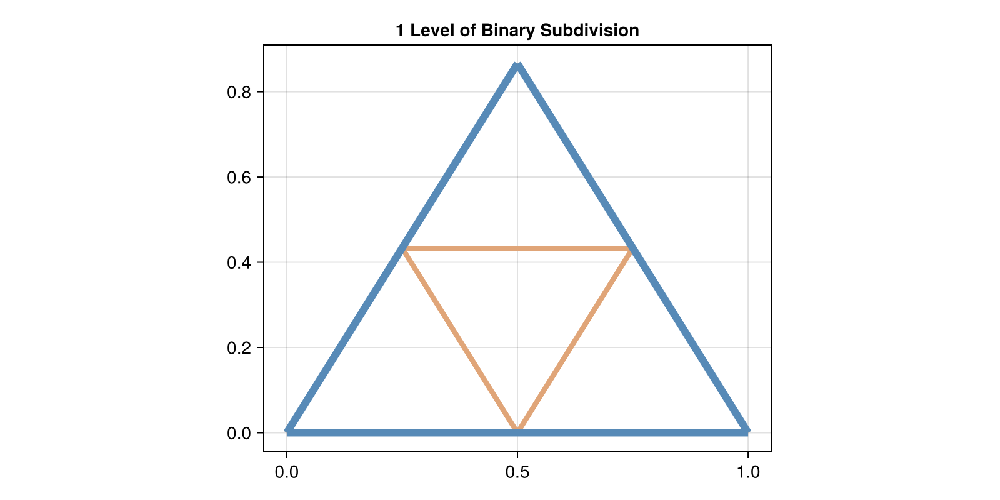
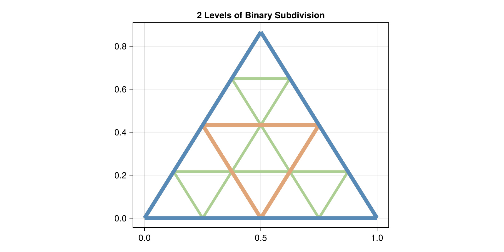
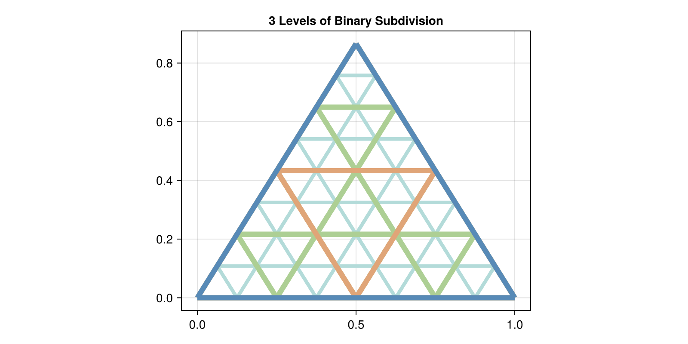
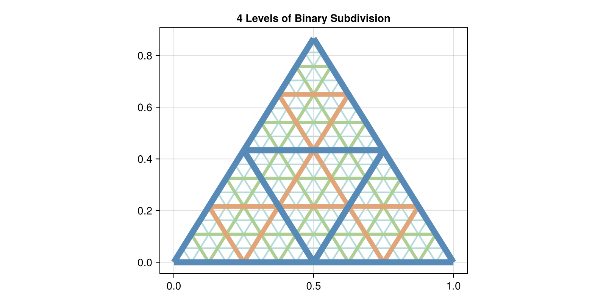
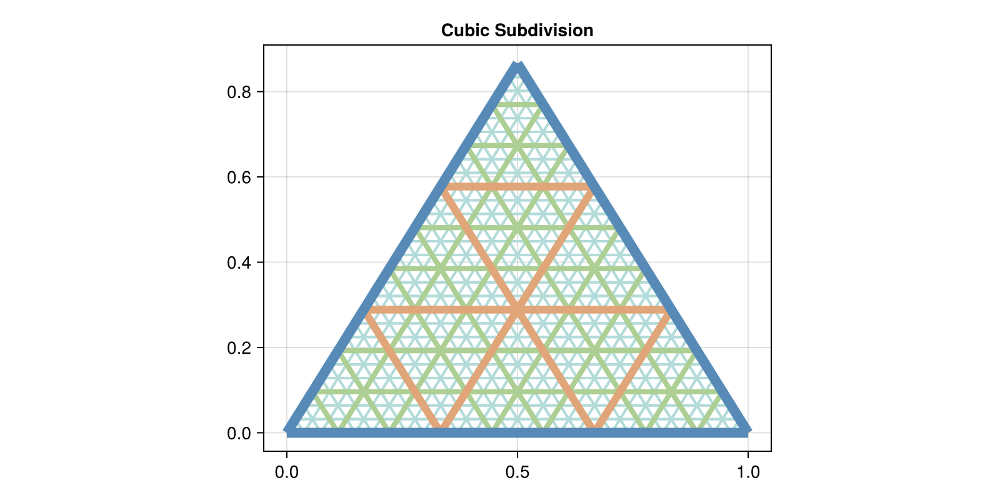
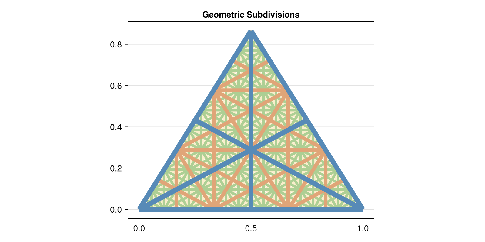

Subdivision of Meshes
To use the multigrid solvers or conduct a convergence analysis, you need to construct a sequence of meshes of finer resolution. The easiest way to get such a sequence is to take a coarse mesh and recursively subdivide each triangle until you reach a desired resolution. This resolution could be determined by measuring the length of the edges, or the area of the triangles.
This page will show you how to construct these sequences. And demonstrate what the different options look like.
using CombinatorialSpaces
using GeometryBasics
using GeometryBasics: Point3d
using CairoMakie, StaticArrays
using Colors
Blue = colorant"#578AB7"
Orange = colorant"#E0A578"
Green = colorant"#ADCF94"
Beige = colorant"#F9EECB"
Teal = colorant"#B3DBD9"
Purple = colorant"#D7C9F1"
colors = [Blue, Orange, Green, Beige, Teal, Purple]
Binary Subdivision
This subdivision takes each edge and replaces it with two edges by subdividing at the midpoint. This is also sometimes called medial subdivision.
s = EmbeddedDeltaSet2D{Float64, Point3d}()
add_vertices!(s, 3, point=[Point3d(0,0,0), Point3d(1,0,0), Point3d(0.5,0.866,0)])
glue_sorted_triangle!(s, 1,2,3)
t = binary_subdivision(s)
u = binary_subdivision(t)
v = binary_subdivision(u)
f = Figure()
ax = CairoMakie.Axis(f[1,1]; title="Initial Triangle", aspect=1.25)
wireframe!(ax, s, linewidth=6, color=Blue)
f
Level 1
f = Figure()
ax = CairoMakie.Axis(f[1,1]; title="1 Level of Binary Subdivision", aspect=1.25)
wireframe!(ax, t, linewidth=4, color=Orange)
wireframe!(ax, s, linewidth=6, color=Blue)
f
Level 2
f = Figure()
ax = CairoMakie.Axis(f[1,1]; title="2 Levels of Binary Subdivision", aspect=1.25)
wireframe!(ax, u, linewidth=4, color=Green)
wireframe!(ax, t, linewidth=6, color=Orange)
wireframe!(ax, s, linewidth=6, color=Blue)
f
Level 3
f = Figure()
ax = CairoMakie.Axis(f[1,1]; title="3 Levels of Binary Subdivision", aspect=1.25)
wireframe!(ax, v, linewidth=4, color=Teal)
wireframe!(ax, u, linewidth=6, color=Green)
wireframe!(ax, t, linewidth=6, color=Orange)
wireframe!(ax, s, linewidth=6, color=Blue)
f
Level 4
s = EmbeddedDeltaSet2D{Float64, Point3d}()
add_vertices!(s, 3, point=[Point3d(0,0,0), Point3d(1,0,0), Point3d(0.5,0.866,0)])
glue_sorted_triangle!(s, 1,2,3)
t = binary_subdivision(s)
u = binary_subdivision(t)
v = binary_subdivision(u)
w = binary_subdivision(v)
f = Figure()
ax = CairoMakie.Axis(f[1,1]; title="4 Levels of Binary Subdivision", aspect=1.25)
wireframe!(ax, w, linewidth=2, color=Teal)
wireframe!(ax, v, linewidth=4, color=Green)
wireframe!(ax, u, linewidth=6, color=Orange)
wireframe!(ax, t, linewidth=8, color=Blue)
f
Cubic Subdivision
The next subdivision scheme replaces each edge with three edges at the 1/3 and 2/3 points along the edge. This mesh looks more like the nuclear radiation symbol.
s = EmbeddedDeltaSet2D{Float64, Point3d}()
add_vertices!(s, 3, point=[Point3d(0,0,0), Point3d(1,0,0), Point3d(0.5,0.866,0)])
glue_sorted_triangle!(s, 1,2,3)
t = cubic_subdivision(s)
u = cubic_subdivision(t)
v = cubic_subdivision(u)
f = Figure()
ax = CairoMakie.Axis(f[1,1]; title="Cubic Subdivision", aspect=1.25)
wireframe!(ax, v, linewidth=2, color=Teal)
wireframe!(ax, u, linewidth=4, color=Green)
wireframe!(ax, t, linewidth=6, color=Orange)
wireframe!(ax, s, linewidth=8, color=Blue)
f
Preparing for Multigrid
When you want to use multigrid, you need both a sequence of meshes and the geometric morphisms between them that encode the continuous map between their geometric realizations.
The type PrimalGeometricMapSeries holds this information when generated from a subdivision scheme.
You can visualize them with the following plotting function:
scheme = CubicSubdivision()
level = 3
s = EmbeddedDeltaSet2D{Float64, Point3d}()
add_vertices!(s, 3, point=[Point3d(0,0,0), Point3d(1,0,0), Point3d(0.5,0.866,0)])
glue_sorted_triangle!(s, 1,2,3)
series = PrimalGeometricMapSeries(s, scheme, level)
function wireframe_series(s::PrimalGeometricMapSeries)
levels = length(s.meshes)
f = Figure()
ax = CairoMakie.Axis(f[1,1]; title="Geometric Subdivisions", aspect=1.25)
for (i, v) in enumerate(s.meshes)
wireframe!(ax, v, linewidth=2i, color=colors[mod((levels - i), length(colors))+1])
end
f
end
wireframe_series(series)
The PrimalGeometricMapSeries type actually contains dual complexes. But it is defined by subdividing the primal mesh.